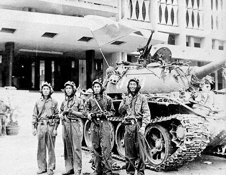
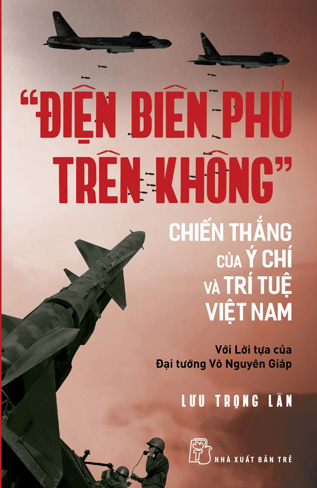
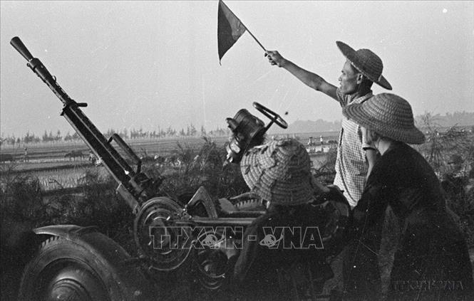
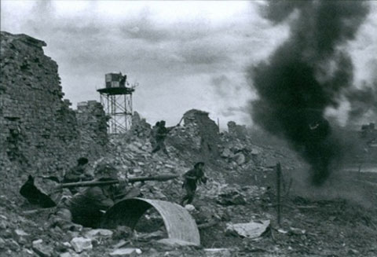
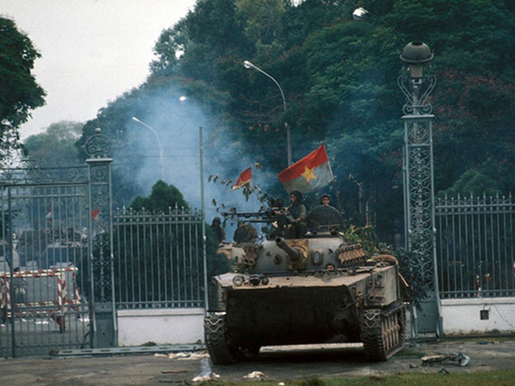

Kháng chiến chống Mỹ (1955-1975)
Phân tích chiến thuật trận đánh đường dây
Cuộc kháng chiến chống Mỹ (1954–1975) là một điển hình kinh điển của chiến tranh phi đối xứng. Quân Giải phóng miền Nam và Quân đội Nhân dân Việt Nam phải đối đầu với một siêu cường có sức mạnh hỏa lực, không quân và công nghệ di chuyển (trực thăng vận, thiết xa vận) vượt trội. Để bù đắp khoảng cách này, Việt Nam đã sử dụng một hệ thống chiến thuật kết hợp linh hoạt giữa quân sự, chính trị và địa hình.Dưới đây là những chiến thuật quân sự cốt lõi đã làm nên sự khác biệt.1. Chiến thuật "Nắm thắt lưng địch mà đánh"Trước hỏa lực pháo binh và không quân (như máy bay ném bom B-52) áp đảo của Mỹ, việc giữ khoảng cách trên chiến trường là tự sát. Tướng Nguyễn Chí Thanh đã đúc kết và đề ra chiến thuật "nắm thắt lưng địch mà đánh" — chủ động áp sát đội hình địch ở cự ly cực gần.Vô hiệu hóa hỏa lực: Khi hai bên giao tranh ở khoảng cách dưới 50 mét, quân đội Mỹ không thể gọi pháo binh hay không quân yểm trợ vì rủi ro tiêu diệt chính quân mình.Đánh nhanh, rút gọn: Sử dụng các đơn vị nhỏ, cơ động, tấn công bất ngờ vào ban đêm hoặc khu vực địa hình phức tạp, sau đó phân tán rút lui nhanh chóng trước khi quân tiếp viện của Mỹ kịp phản ứng.2. Chiến tranh ngầm: Địa đạo và bẫy chôngĐịa hình rừng rậm và hệ thống sinh thái nhiệt đới được biến thành vũ khí. Nổi bật nhất là nghệ thuật chiến tranh đường hầm, điển hình là hệ thống địa đạo Củ Chi dài hơn 250km nằm ngay sát Sài Gòn.Thành phố dưới mặt đất: Địa đạo được thiết kế nhiều tầng, bao gồm bệnh viện, kho vũ khí, phòng họp và bếp Hoàng Cầm (hệ thống bếp tản khói sát mặt đất), giúp lực lượng sinh tồn qua các đợt càn quét và ném bom rải thảm.Yếu tố bất ngờ: Du kích có thể trồi lên từ các miệng hầm ngụy trang tinh vi để phục kích, sau đó nhanh chóng lặn xuống lòng đất, khiến lính bộ binh Mỹ mất phương hướng.Hệ thống bẫy: Mìn tự tạo (thường lấy từ chính bom đạn lép của Mỹ) và bẫy chông được giăng khắp các nẻo đường rừng, không chỉ gây thương vong mà còn tạo ra rào cản tâm lý cực lớn cho đối phương.3. Nghệ thuật Hậu cần: Đường Hồ Chí MinhMỹ đã dùng mọi nỗ lực công nghệ — từ thả "cây nhiệt đới" (cảm biến điện tử), rải chất độc hóa học làm trụi lá rừng, đến ném bom tọa độ — để cắt đứt tuyến chi viện từ miền Bắc vào miền Nam. Tuy nhiên, họ đã thất bại trước mạng lưới Đường Trường Sơn.Mạng lưới ma trận: Đây không phải là một con đường đơn lẻ mà là một ma trận chằng chịt các tuyến đường bộ, đường mòn, đường ống xăng dầu và đường sông ngầm. Tuyến này bị đánh phá, lập tức có tuyến khác thay thế.Ngụy trang tự nhiên: Hàng vạn thanh niên xung phong và công binh đã sử dụng nghệ thuật ngụy trang, đan các vòm lá rừng che kín cả một quãng đường dài để mắt thần của máy bay trinh sát không thể phát hiện các đoàn xe vận tải di chuyển bên dưới.4. Chiến lược "Ba vùng" và "Ba mũi giáp công"Khác với các cuộc chiến tranh quy ước phân định rõ tiền tuyến và hậu phương, Việt Nam áp dụng thế trận chiến tranh nhân dân toàn diện:Ba vùng chiến lược: Chia không gian tác chiến thành Rừng núi (tập trung đánh tiêu diệt lực lượng lớn), Nông thôn đồng bằng (chiến tranh du kích, phá "ấp chiến lược") và Đô thị (nơi hoạt động của lực lượng biệt động và phong trào biểu tình).Ba mũi giáp công: Mỗi chiến dịch đều kết hợp chặt chẽ giữa Đấu tranh quân sự (tiêu diệt sinh lực địch), Đấu tranh chính trị (vận động nhân dân nổi dậy) và Binh vận (kêu gọi lính chế độ cũ đào ngũ, làm suy sụp ý chí của lính Mỹ).Chính sự kết hợp đa chiều này khiến Mỹ dù có thắng trong nhiều trận đánh chiến thuật quy mô lớn cũng không thể kiểm soát được lãnh thổ và giành được sự ủng hộ của dân chúng, dẫn đến sự sa lầy về mặt chiến lược.







Thất bại trong Chiến tranh Việt Nam (kết thúc năm 1975) không chỉ là một trận thua trên chiến trường mà còn là một cú sốc chính trị, quân sự và tâm lý khổng lồ đối với nước Mỹ. Dưới góc độ lịch sử và quan hệ quốc tế, thất bại này thường được đánh giá là đòn giáng mạnh mẽ nhất vào danh dự, vị thế và niềm kiêu hãnh của siêu cường số một thế giới vào thời điểm đó.
concauhoaky